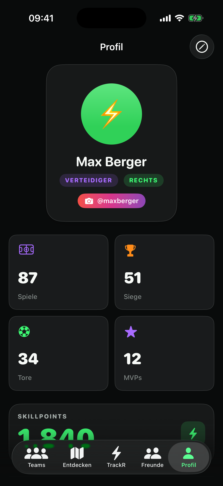

Profil & SP-Punkte
Tracke deine Stats
Wie gut bist du wirklich?
Jedes Match, jeder Sieg, jede Serie fließt in dein SP-Punktekonto. SoccR sammelt deine Auftritte automatisch und zeigt dir schwarz auf grün, wie sich dein Spiel über die Saison entwickelt – inklusive Abzeichen für besondere Erfolge.
- 0SP-Punkte
- 0Erfolge
- 0Kicks